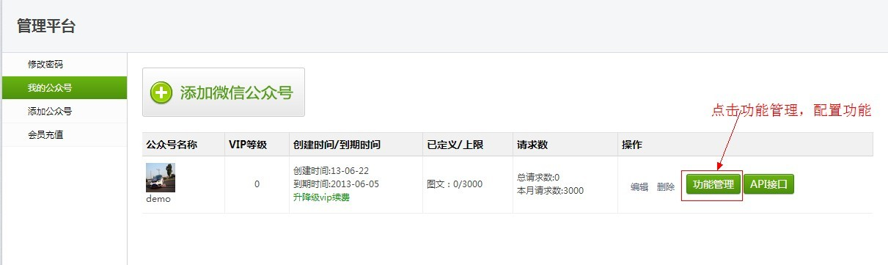
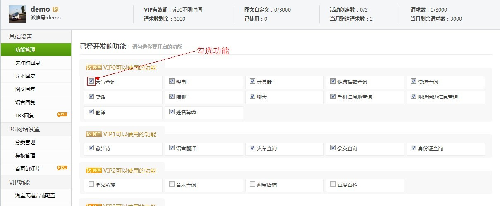
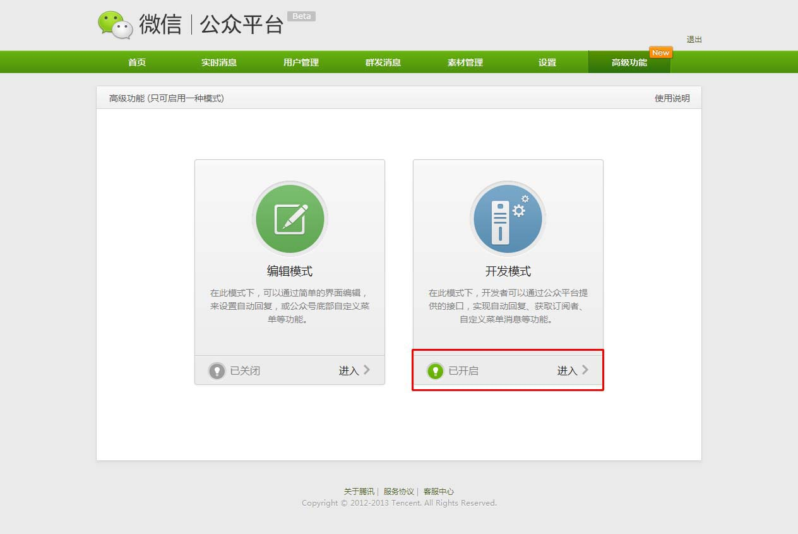
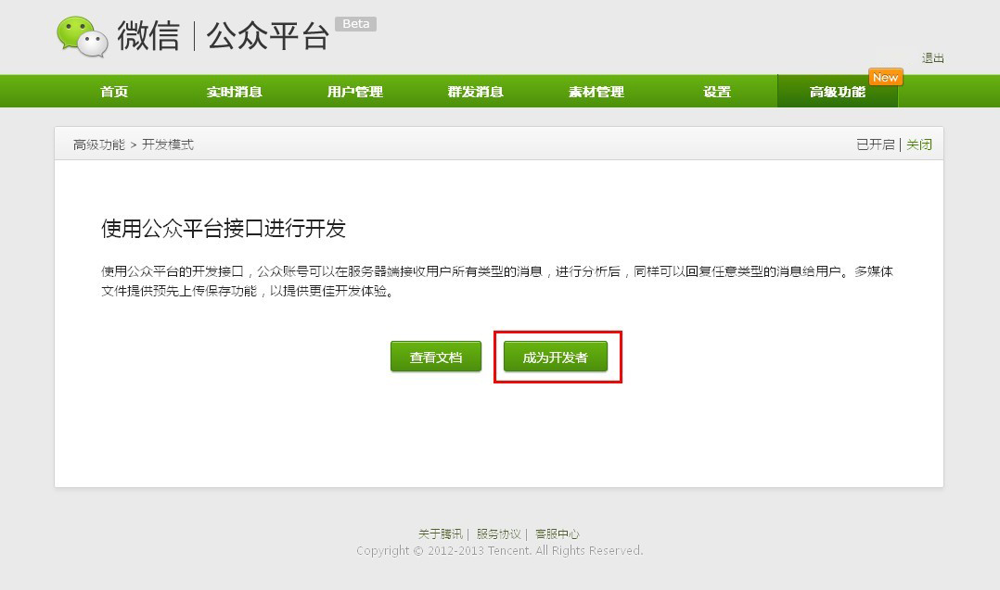
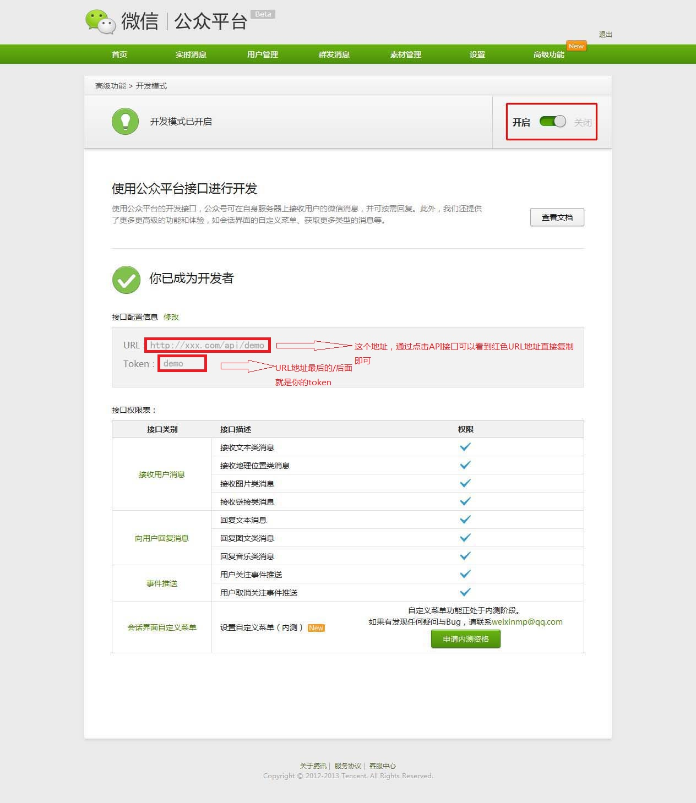

请务必认真阅读以下2步内容，才能更有效的完成配置工作，有疑问的请联系QQ：35124325提问。
第一步、在微信风平台绑定你的微信公众号。
1、注册并登录微信风平台平台
2、添加公众号 → 功能管理 → 勾选要开启的功能
 第二步、到微信公众平台设置接口。
1、登录 微信公众平台（http://mp.weixin.qq.com/），进行身份认证，填写信息，提交身份证。
认证后，点击高级功能 → 进入开发模式
2、点击"成为开发者"按钮
3、填写接口配置信息
比如你微信风平台平台上的地址是http://www.weixinfr.com/index.php/api/xxx
那么URL就是: http://www.weixinfr.com/index.php/api/xxx
那么Token就是: xxx
Token同样填写平台上分配的Token
4、确认开启
5、在手机上用微信给你的公众号输入"帮助"，测试你的接口是否配置正常！